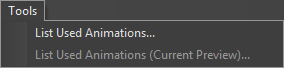
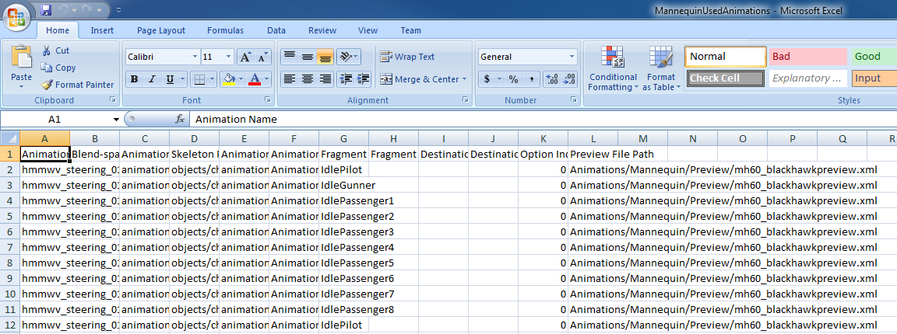
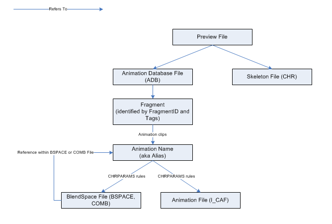

Обзор
Эта функция экспортирует список использованных анимаций в текстовый файл, который впоследствии можно открыть в виде электронной таблицы. Сюда входят используемые пространства смешивания (bspace, Comb) и анимации, на которые они ссылаются.

Вы можете найти его в меню «Инструменты» в редакторе Mannequin.
- Список использованных анимаций...: Инструмент перечисляет анимации, используемые в любом файле предварительного просмотра, который он может найти в Animations/Mannequin/Preview. (он открывает все файлы, заканчивающиеся на XML, которые может найти в этой папке или ее подпапках)
- Список использованных анимаций (текущий предварительный просмотр)...: инструмент перечисляет анимации, используемые в открытом в данный момент файле предварительного просмотра.
Пример использования Microsoft Excel 2007
После экспорта файла вы можете просто открыть его (файл CSV) в Excel, щелкнув по нему double.
В результате таблица выглядит следующим образом:

Экспортированные данные
Каждая строка экспортированного файла представляет собой конкретную ссылку на анимацию манекена. Поскольку существует множество способов, с помощью которых манекен может ссылаться на определенный файл, обычно будет много строк, ссылающихся на один и тот же файл анимации.
Вот описание колонок:
| Столбец | Описание | Пример |
|---|---|---|
| Название анимации | Краткое имя анимации, также называемое «псевдонимом». Это имя, которое игра использует для обозначения анимации. Оно получается из имени файла анимации с использованием правил, установленных в файле CHRPARAMS. | NPC_Alligator_Idle |
| Blend-пространство | Имя пространства смешивания, которое ссылается на эту анимацию (если есть). | |
| Путь анимации | Путь анимации относительно папки с игровыми данными. | анимации/npc_alligator/npc_alligator_idle.caf |
| Путь Скелета | Путь к скелету (он же модели), который использовался для поиска путей анимации. | объекты/персонажи/npc_alligator/npc_alligator.chr |
| Путь событий анимации | Путь к событиям анимации (находится в CHRPARAMS, назначенном скелету) | Объекты/персонажи/NPC_Alligator/NPC_Alligator_animevents.animevents |
| Путь к базе данных анимации | Путь к базе данных анимации манекена (ADB), содержащей фрагмент. | Анимации/Mannequin/ADB/AlligatorAnims_Creature.adb |
| Имя фрагмента | FragmentID присвоен фрагменту. (если эта анимация является частью перехода, это источник FragmentID перехода) | Простой |
| Фрагмент TagState | Теги, присвоенные фрагменту. | Расслабленный+Маленький |
| Имя целевого фрагмента | Если эта анимация является частью перехода, она показывает пункт назначения FragmentID перехода. В противном случае пусто. | Слайд |
| Состояние тега целевого фрагмента | Если эта анимация является частью перехода, она показывает теги назначения перехода. В противном случае пусто. | Оповещен |
| Индекс опциона | Индекс опции фрагмента. | 0 |
| Предварительный просмотр пути к файлу | Путь к файлу предварительного просмотра, содержащему путь к базе данных скелета и анимации. | Анимации/Mannequin/Предварительный просмотр/alligator.xml |
Чтобы объяснить, почему может быть много ссылок на один и тот же файл по разным путям, это упрощенная диаграмма, показывающая, как манекен ссылается на файлы:

Некоторые примеры:
- Одна и та же анимация (I_CAF) может называться разными именами.
- К одной и той же анимации можно обращаться из нескольких пространств смешивания.
- Один фрагмент может содержать одну и ту же анимацию более одного раза в разных клипах.
- Файл ADB может содержать множество фрагментов или переходов, относящихся к одной и той же анимации.
- В одном файле предварительного просмотра может быть много скелетов. Например, интерактивная дверь может ссылаться на скелет игрока и анимацию для предварительного просмотра.